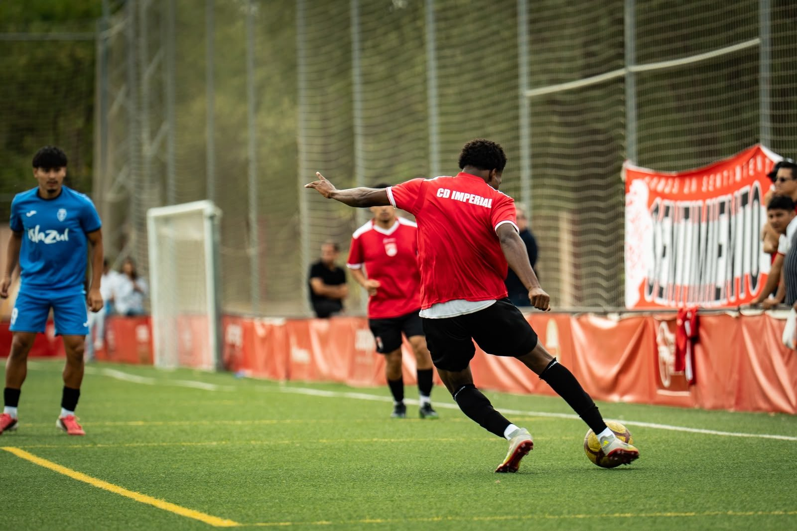
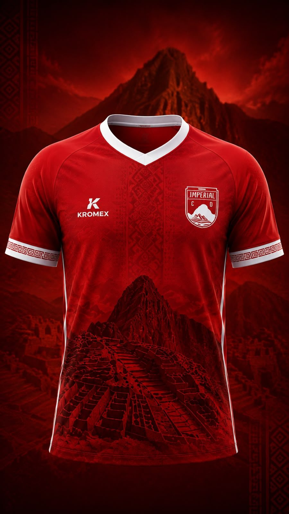
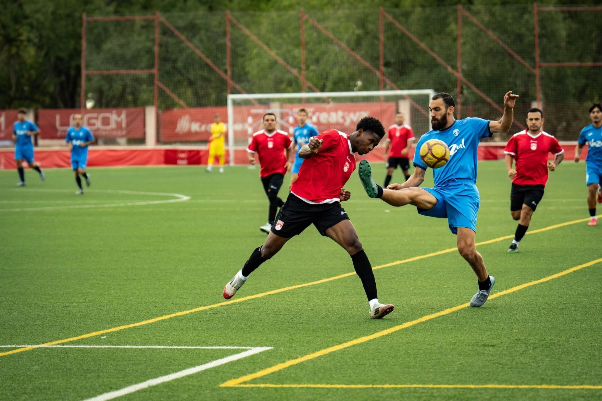

Propósito
Construir desde cero una institución deportiva capaz de competir en las categorías superiores del fútbol español, desarrollar talento, unir comunidades y generar oportunidades mediante el deporte.

Madrid, España Desde 2023
Un club de raíces peruanas, nacido en Madrid, con una ambición que va más allá de las categorías. Estamos construyendo nuestra historia desde cero.
Cada número es solo el comienzo.
Un proyecto diferente
El CD Imperial nació de una idea sencilla, pero extraordinariamente ambiciosa: construir una institución de fútbol desde sus cimientos y recorrer el camino hacia las categorías profesionales del fútbol español.
Con raíces peruanas y espíritu madrileño, somos un proyecto que une deporte, identidad, comunidad y oportunidades.

Construir desde cero una institución deportiva capaz de competir en las categorías superiores del fútbol español, desarrollar talento, unir comunidades y generar oportunidades mediante el deporte.
Desarrollar una institución deportiva competitiva, sostenible e inclusiva, que promueva la formación futbolística, la integración comunitaria y el crecimiento de jóvenes talentos.
Convertir al CD Imperial en una institución de referencia dentro del fútbol español, reconocida por su identidad, cantera, competitividad, comunidad y aspiración de alcanzar el fútbol profesional.
Segunda Aficionados · RFFM · 2026/27
Ascensos progresivos en el fútbol madrileño
Competiciones de ámbito estatal
La meta que guía cada paso
Las etapas posteriores a la actual representan objetivos del proyecto deportivo, no logros alcanzados.

Comunidad Imperial
El Imperial no se construye únicamente dentro del campo. Se construye con cada persona que comparte nuestra historia, acompaña nuestros partidos y cree en lo que estamos creando.
El Imperial en los medios
Patrocinadores y colaboradores
Asociar tu marca al CD Imperial es formar parte de un proyecto con identidad, comunidad y una audiencia digital en pleno crecimiento.
Conviértete en patrocinador